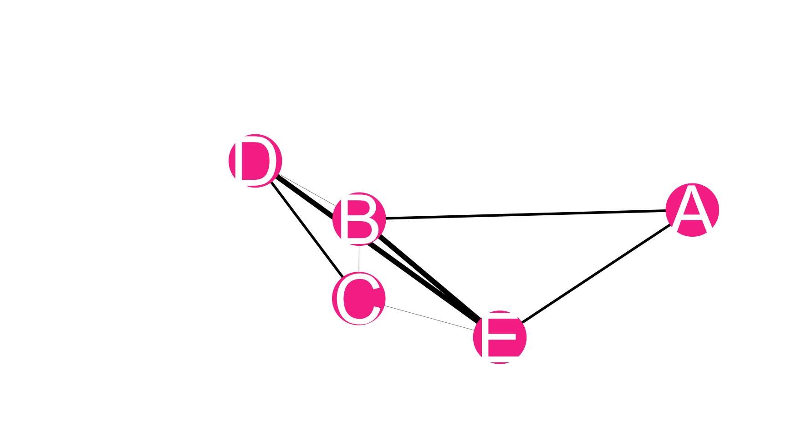
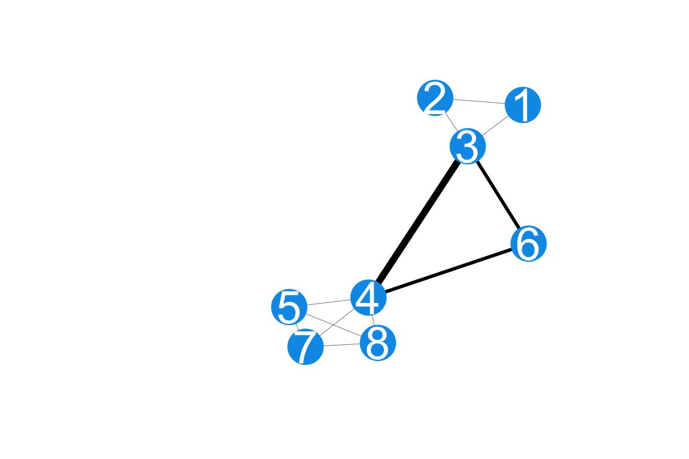

Code
# Access custom defined functions
targets::tar_source("../R_functions")# Access custom defined functions
targets::tar_source("../R_functions")make_example_network_data() |>
plot_example_network(targets::tar_read(config_list)) +
theme_mpxnyc()
The MPX NYC participant community network is a network with community districts and individuals as nodes, and ties between pairs consisting of one individual and one community district. While spatial data were collected using census tract identifiers, the unit of spatial analysis is the community district. Community districts are spatial units that divide New York City into regions which are nested by the five boroughs of New York City, and which in turn nest census tracts.
A tie indicates that the individual as some relation with the community district. This relation can be residence or group contact. Related to this network are the community district network and participant network, described below.
plot_example_network(make_example_network_data("places"), targets::tar_read(config_list)) +
theme_mpxnyc() 
The MPX NYC community district network is a network with community districts as nodes. A weighted tie between two nodes indicates that the two community districts both have at least one MPX NYX participant who has a residence or community district in both places. The weight is given by the count of such individuals. Of interest is the influence each community district has in city-wide outbreak dynamics. It is measured using community district social and spatial reach.
make_example_network_data("people") |>
plot_example_network(targets::tar_read(config_list)) +
theme_mpxnyc()
We examined the patterning of shared physical context among participants using the MPX NYC participant network. In this network, survey participants are represented as nodes. A weighted edge indicates that the individuals represented by the nodes have at least one residence or contact venue in a common community district. The edge weight is given by the count of community districts the pair share. Of interest are the overall connectedness of the network and the pattern of connection across different subgroups.
We measured participant demographics age, race, sex assigned at birth, gender identity, sexual orientation, and community district of residence; health-related questions on HIV status, viral suppression, STI-related symptoms, PrEP use, and mpox vaccination status; and questions related to social and sexual connection with queer and transgender communities: count of recent individual sex contacts, count of recent individual physical (non-sexual) contacts, count of recent important social contacts, and any recent physical or sexual contact in a group setting.
Gender modality was measured using a two-step approach: first, we solicited the participant’s current gender (man, woman, trans man, trans woman, non-binary, other), and then sex assigned at birth (male, female, other). We then constructed a gender modality variable as follows:
data.frame(
Level = c(
"Cisgender man",
"Cisgender woman",
"Transgender man",
"Transgender woman",
"Transgender man",
"Transgender woman",
"Non-binary",
"Another demographic"
),
Condition = c(
"gender is 'man' and assigned sex is 'male' ",
"gender is 'woman' and assigned sex is 'female'",
"gender is 'man' and assigned sex is 'female'",
"gender is 'woman' and assigned sex is 'male'",
"gender is 'trans man' and sex is any value",
"gender is 'trans woman' and sex is any value",
"gender is 'non-binary' and sex is any value",
"gender is 'other' and sex is any value"
)
) |>
gt::gt()| Level | Condition |
|---|---|
| Cisgender man | gender is 'man' and assigned sex is 'male' |
| Cisgender woman | gender is 'woman' and assigned sex is 'female' |
| Transgender man | gender is 'man' and assigned sex is 'female' |
| Transgender woman | gender is 'woman' and assigned sex is 'male' |
| Transgender man | gender is 'trans man' and sex is any value |
| Transgender woman | gender is 'trans woman' and sex is any value |
| Non-binary | gender is 'non-binary' and sex is any value |
| Another demographic | gender is 'other' and sex is any value |
We created a Race-gender variable which is a categorical variable with levels identical to the gender modality with one modification: instead of having all cisgender men in one level we divided the group up into white cisgender men, Latinx cisgender men, Black cisgender men, and under the category Other cisgender men, we grouped Asian, Pacific Islander and other cisgender men.
For a given community district spatial reach is defined as the sum of edge weights for edges connecting that community district to others (in the MPX NYC community district network. It quantifies the volume or level of exchange of individuals between a particular community district and others.
All participants were asked the location of their residence through the Person-Place Network Map question. Each participant’s residences is represented as an edge between the participant and the community district containing their residence.
Participants who indicated recent physical or sexual contact in a group setting were asked for the locations of each of the places where the contact happened. We call these contact places. They are each represented as an edge between the participant and the community district containing the contact place.
Participants were asked the type of venue each contact place was (dance party, sex party, darkroom, sport game, concert, theatre/show, private residence, sex club, bathhouse, park, something else).
Participants were also asked if they had sexual contact at each contact place.
We constructed an approximate measure of the distance between residence and contact venue by categorizing venues into those that are in the same community district as the residence; in a different community district but the same borough; or in a different borough. We refer to this measure as distance from home.
We measure connectedness using the proportion of nodes in the largest connected component (LCC) of the MPX NYC participant network. In a network, a connected component is a subset of nodes such that each node in the subset is reachable from any other node in the subset, and such that there are no nodes outside the subset which are reachable from a node inside it. By “reachable”, we mean possible to reach by tracing a path from one node to another over existing network ties. We consider a network with a larger LCC to be better connected than a network with a smaller LCC.
We measure patterns of mixing between a pair of distict subgroups of participants using the spatial mixing ratio. It is a positive real number which is greater than 1 if individuals in the first subgroup tend to live and play in community districts that individuals in the second subgroup do. It is defined as the average (calculated across individuals) spatial preference of the first group for the second group, divided by the prevalence of the second group. For a given individual, spatial preference for a given group is defined as the sum of the weights of the edges connecting to nodes of the second group, divided by the total sum weights.
plot_icon(icon_name = "devil", color = "dark_orange", shape = 16, alpha = 0.1)
Social reach
For a given community district, social reach is defined as the sum of edge weights for edges connecting that community district to individuals (in the MPX NYC spatial participant network). It quantifies the volume or level of contact in the community district.